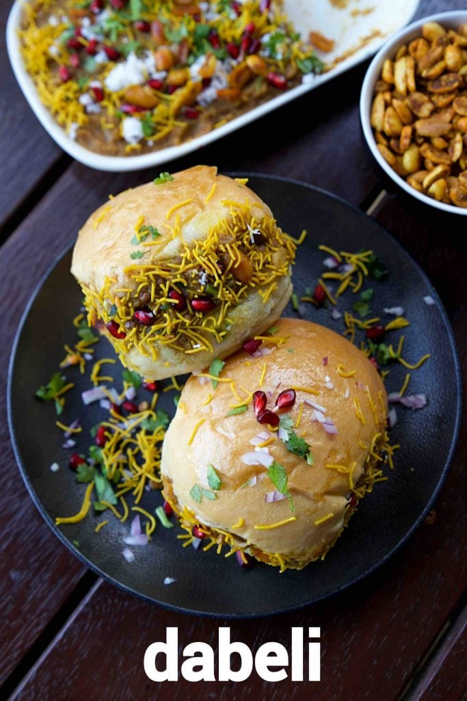

Dabeli Recipie

An extremely popular gujarati street food snack recipe made with indian pav bread and stuffed with a unique blend of
masala. the recipe looks very similar to the maharashtrian vada pav snack but has a combination of taste and
flavours in it. generally, dhabeli snack is consumed as an evening snack with a cup of tea or coffee, but can also
be consumed for morning breakfast and noon lunch.
how to make kacchi dabeli with step by step photo and video recipe. gujarati street food recipes are known for its
flavour, taste and unique blend of spices. the uniqueness about gujarati snack is its versatility and the appeal to
the wide audience. moreover, the same dish can be consumed as an evening snack but also can be served for other time
meals. one such easy and a simple multipurpose meal is dabeli recipe known for its taste and also filling nature.
ingredients
- Paw buns
- Potato
- pomegranate
- peanuts
- 6 Red Chillies (Kashmiri/ Degi mirch)
- 1 tablespoon Sesame
- 2 tablespoon Dry Coconut
- ¼ cup Coriander seeds
- 1 teaspoon Fennel seeds
- 1 tablespoon Cumin Seeds
- 2 Bay Leaves
- 2 Cinnamon, small
- 1 Star anise
- 2 Cardamom
- 1 teaspoon Black Pepper
- 2 Cloves
- 1 teaspoon Black Salt
- 1 teaspoon Amchur Powder
- 4 tablespoon Sugar (Mix later)
- 2 tablespoon oil (Mix later)
Steps
- Gather all ingredients needed.
- Slit the pav buns, leaving it
- intact at one end. Smear generous amount of sweet chutney.
- Over that, slather the potato filling we prepared.
- On top of it, sprinkle some masala peanuts and chopped onion.
- Again top it with sweet chutney. Spread lehsun chutney on the closing side of the bun.
- Close it to cover.
- Heat a pan with a teaspoon of butter in low heat. Toast all the sides including the masalas exposed on the sides.
- No need to cook for too long, but just for few seconds each side.
- Dip the masala sides in sev to cover it.
- Dabeli ready to enjoy!
My long time wish/ project Dabeli is done! I have more Dabeli masala and chutneys, this weekend sure will repeat it